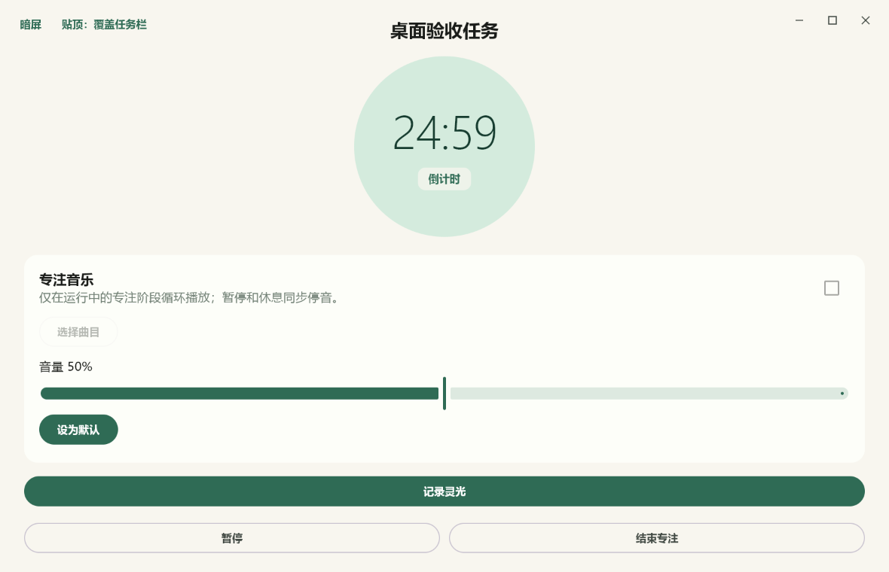
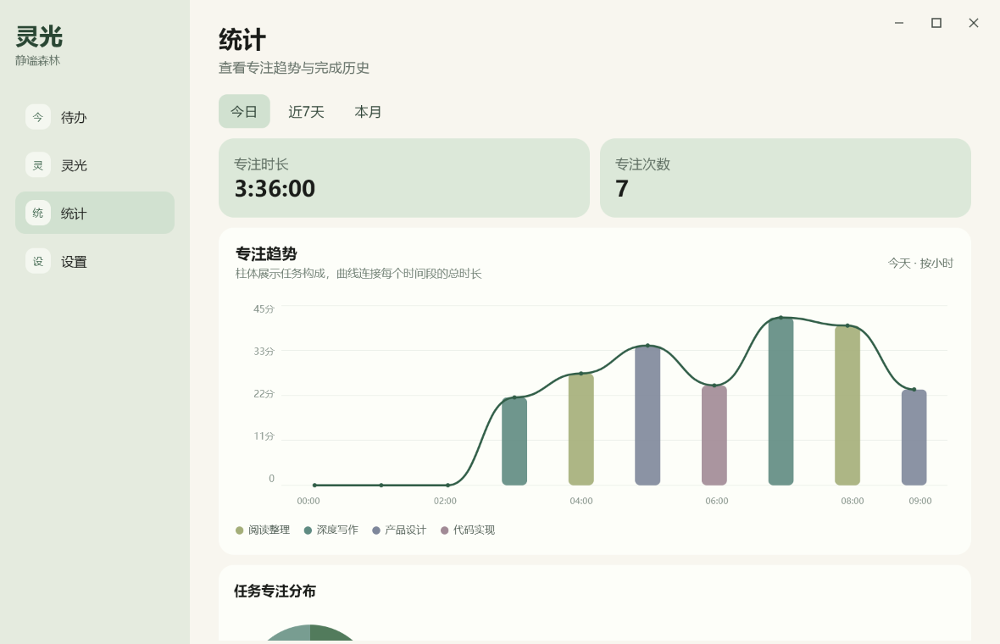

任务计划
分组、今天、即将、收集箱、重复任务与本地提醒，共同承接日常计划。
01 / PURPOSE
灵光把任务管理和专注计时放在同一条路径上。开始之前明确要做什么，进行中只保留必要的信息，突然出现的想法先快速收下，而不是立刻离开当前任务。
专注结束后，这些想法仍然回到可以整理的位置：值得行动的转成待办，只需要留存的归档。记录、行动与复盘因此能够自然衔接。
02 / FLOW
五个连续动作构成灵光的核心使用路径。
从今天、即将或收集箱中梳理任务，也可以设置日期、时间与提醒。
为具体任务启动倒计时或番茄专注，让这一段时间有清晰归属。
专注中快速记录文字或图片，不必把临时想法立刻展开。
专注后把记录归档，或将需要行动的内容转入待办收集箱。
从专注时长、任务构成与完成历史中回看时间真正去了哪里。
03 / CAPABILITIES
分组、今天、即将、收集箱、重复任务与本地提醒，共同承接日常计划。
支持任务级专注、可配置番茄阶段，以及暂停后继续推进的专注过程。
记录专注途中出现的文字与图片，再批量归档或转换为正式待办。
按日、近七天或月查看专注构成、趋势与完成历史，形成可回看的反馈。
从设备导入 MP3 或 FLAC，在专注阶段循环播放，不依赖在线播放服务。
由用户主动导入或导出版本化的 .lingguang 文件，在设备之间转移数据。
安排真正重要的事，并从具体任务直接进入专注。
让计时、音乐和快速记录围绕正在进行的任务展开。

集中整理专注途中留下的想法，归档或转成下一项行动。

从时间分布与专注趋势中复盘，再回到下一轮计划。

05 / PLATFORMS
灵光提供 Android 与 Windows 客户端。两端围绕相同的任务、专注、灵光和统计主链设计，同时尊重各自平台的交互方式。
通过系统文件选择器导入本地内容，并使用平台通知与提醒能力支持移动场景。
使用原生桌面窗口、系统托盘与可配置快捷键，让记录和专注更贴近电脑工作流。
06 / PRIVACY
`.lingguang` 文件未加密，可能包含任务、专注历史、灵光与图片；应像对待私人资料一样妥善保管。
07 / CURRENT STATUS
灵光是我持续迭代的个人项目。目前重点仍是打磨真实使用体验、跨平台一致性与本地数据可靠性，暂不提供公开下载或源码入口。
返回查看其他项目